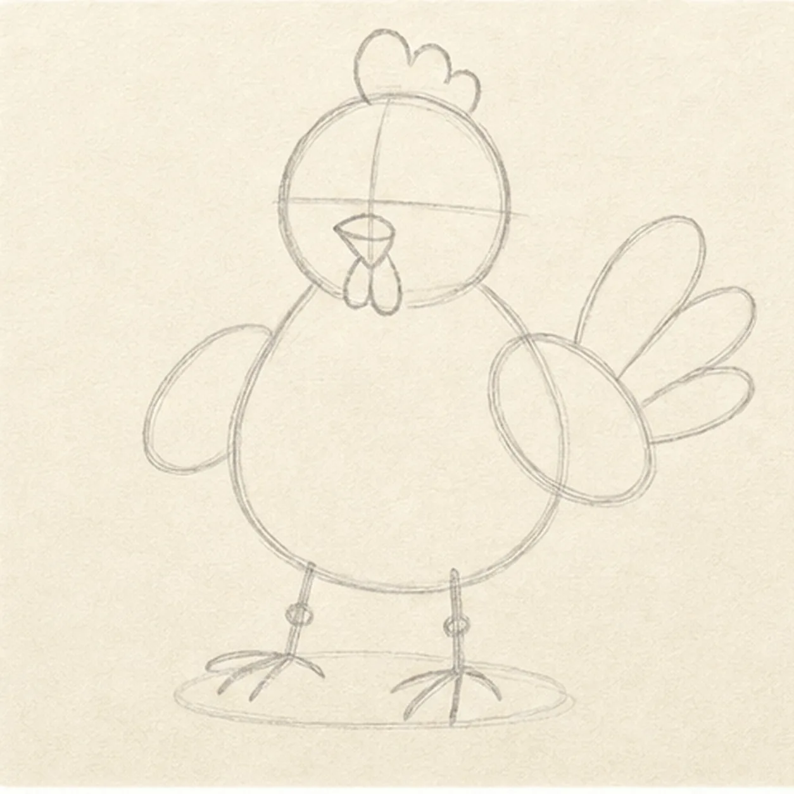
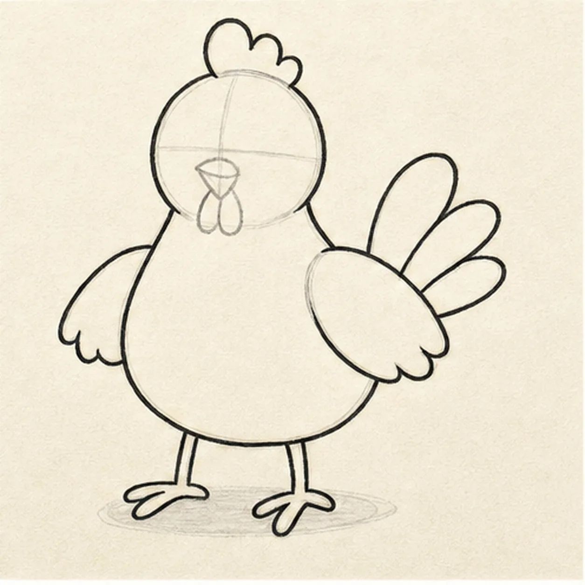
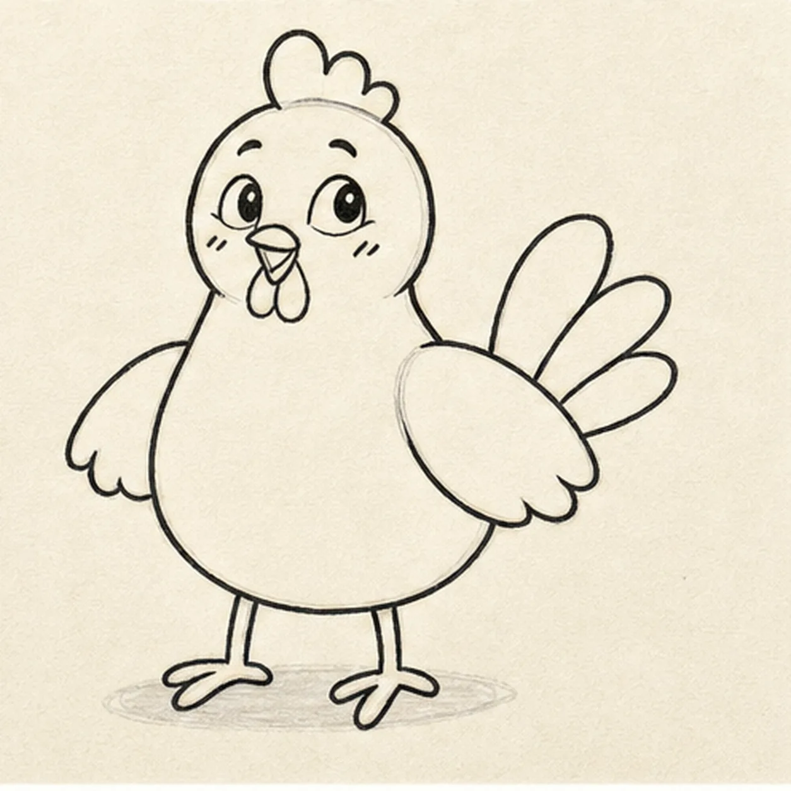
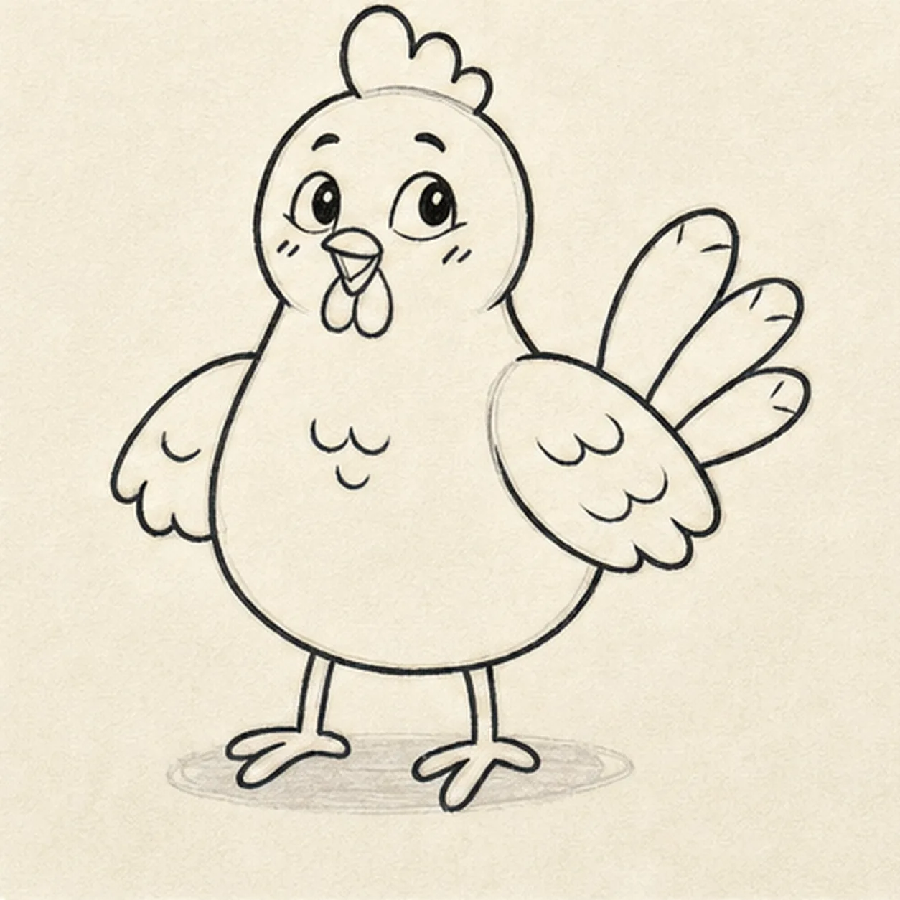
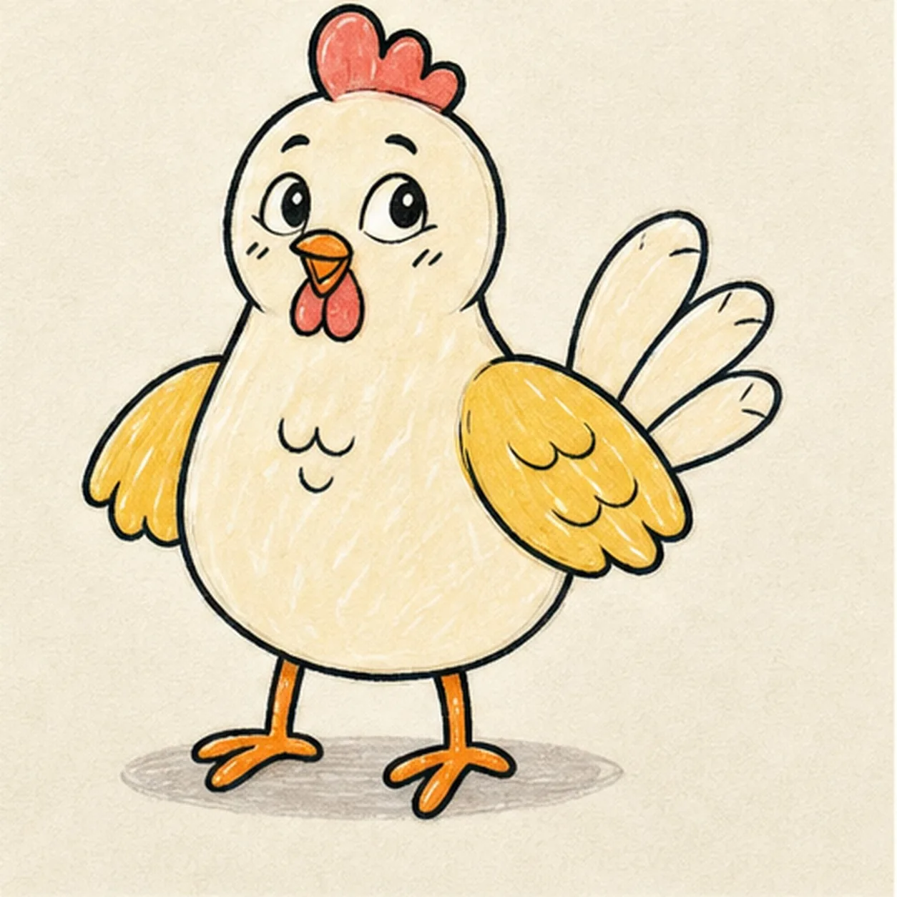

Felt-tip marker mode
Let's draw a cartoon chicken
Treat this as one playful practice round: sketch the idea loosely, simplify the shapes, then commit with confident marker outlines and bright fills.
-
01

Map the chicken shapes
Draw a light round head over a plump pear-shaped body, then reserve two wings, exactly three tail feathers, two leg axes with three-toe foot routes, the comb, beak, face axes, and one shallow shadow.
Marker tip: Ghost the body curve twice before touching down, then compare the open spaces beside both wings. Count three tail routes and three toe routes per foot while the lines are still easy to move.
-
02

Shape the plump silhouette
Wrap the guides with the round head, pear body, two small wings, exactly three tail feathers, two legs, three toes per foot, one three-bump comb, and two small wattles.
Marker tip: Rotate the page for the long belly curve and let the wings stay slightly uneven. Trace from each leg into all three toes so none appears detached or disappears later.
-
03

Give the chicken a sunny peep
Add two wide almond-shaped eyes looking slightly upward, two raised brows, one tiny open two-part beak, and two short cheek marks inside the established head.
Marker tip: Place the pupils high and a little to one side, then float the brows above them. The upward glance, open beak, and cheeks create charm without falling back on dot eyes and a U-smile.
-
04

Tuck in the feather details
Add curved feather marks inside the larger near wing, small edge tufts on the far wing, three small breast tufts, tail notches, and one shallow oval shadow beneath the feet.
Marker tip: Use two or three relaxed curves rather than filling every wing with feathers. Keep more blank paper than texture so the chicken remains easy and readable at card size.
-
05

Add the sunny marker color
Thicken every established contour and fill the body cream, wings golden yellow, comb and wattles coral red, beak and feet orange, and shadow warm gray while leaving visible paper streaks.
Marker tip: Pull the marker strokes with the round body and each wing. Let the warm colors dry before reinforcing their black edges so the expression stays crisp instead of muddy.
-
06
![Handmade marker drawing of one upright three-quarter cartoon chicken with a creamy round head and plump pear-shaped body, two golden-yellow wings, exactly three pale tail feathers, two orange legs with exactly three toes per foot, one coral-red three-bump comb, two coral wattles, two wide almond-shaped eyes looking slightly upward, two raised brows, one tiny open orange beak, two short cheek marks, small feather tufts, thick imperfect black outlines, visible marker streaks, warm-paper highlights, and one shallow warm-gray oval shadow](../assets/cartoon-chicken-finished-v1.webp)
Let the little chicken chirp
Strengthen the keeper outlines and clarify the established two wings, three tail feathers, two three-toed feet, comb, wattles, bright-eyed open-beak face, feather marks, limited fills, paper highlights, and shadow.
Marker tip: Count two wings, three tail feathers, two legs, and three toes per foot, then stop. You can change the colors or gaze, but an egg, nest, barn, extra chicken, sticker edge, or badge frame would make a different lesson.
![Handmade face-free felt-tip marker drawing of one open book in a shallow three-quarter view with exactly two blank page blocks, one black V-shaped center gutter, one coral ribbon bookmark hanging from the gutter, one small curled outer corner on each page, exactly three stacked warm-yellow lower page-edge bands per side, raspberry marker fill across the left page and cover plane, teal marker fill across the right page and cover plane, small open-paper cover-edge highlights, thick imperfect black outlines, visible marker streaks, restrained edge hatching, and one broken deep-navy shadow](../assets/open-book-with-ribbon-bookmark-finished-v1.webp)
![Handmade face-free felt-tip marker drawing of one diagonal pickleball paddle with one thick oval face divided into raspberry, teal, and mustard color blocks by exactly two diagonal routes, one doubled black rim, one short neck, one coral handle with exactly three curved grip bands and a small end cap, one mustard pickleball at upper right with exactly seven visible open holes, two black paddle-swing arcs, exactly three black ball-speed dashes, two open-paper oval highlights on the paddle face, thick imperfect black outlines, visible marker streaks, and one broken deep-navy shadow beneath the handle](../assets/pickleball-paddle-and-ball-in-motion-finished-v1.webp)
![Handmade felt-tip marker drawing of one mischievous cool-gray raccoon peeking from one open teal trash can with exactly two coral-lined ears, two asymmetric charcoal mask patches, one half-lidded eye and one wide eye glancing toward the right side of the page, one raised brow, one dark nose, one crooked grin with one small tooth, exactly two gray paws gripping the front rim, one curled gray tail with exactly three charcoal bands, exactly two can handles, exactly four long can ribs, one tall open-paper highlight, two mustard accent blocks, one diamond-shaped dent, thick imperfect black outlines, visible marker streaks, and one broken deep-navy shadow](../assets/raccoon-peeking-from-trash-can-finished-v1.webp)